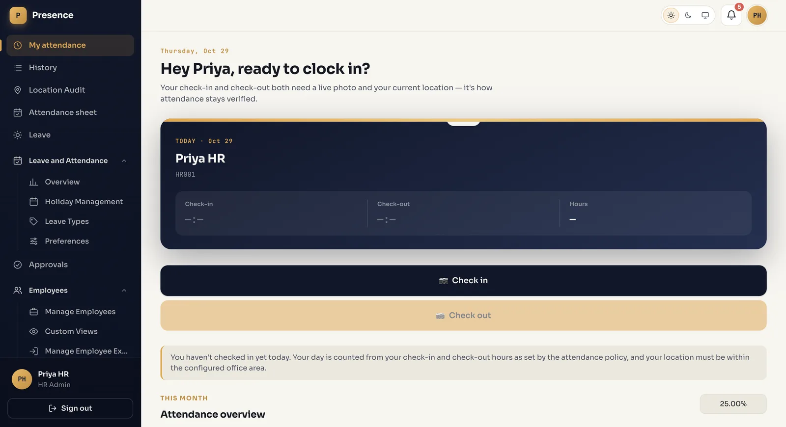
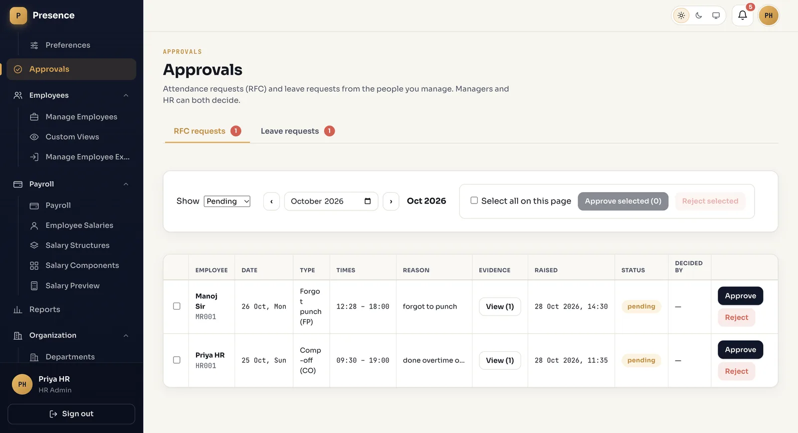
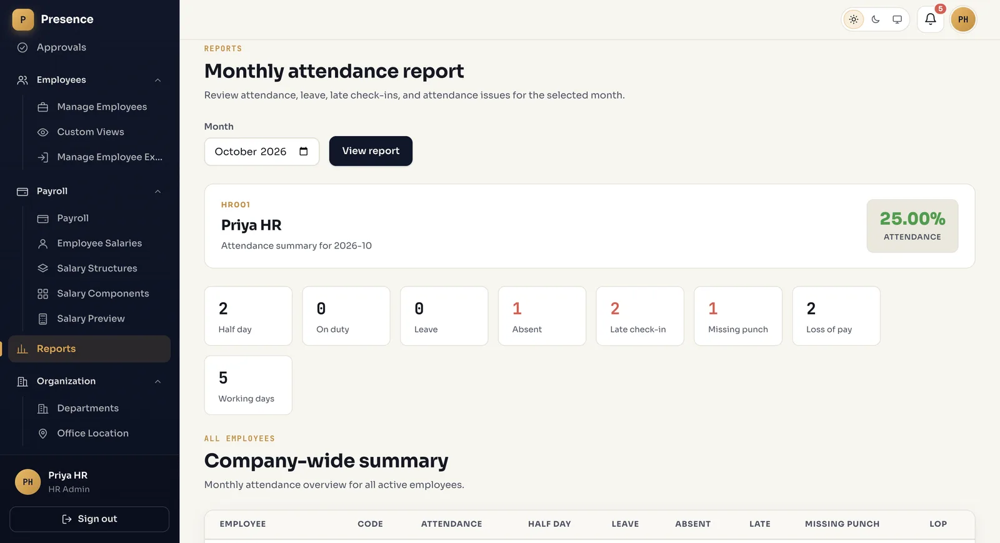
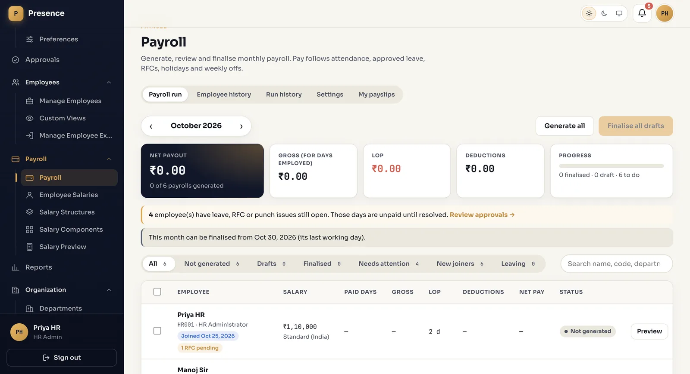
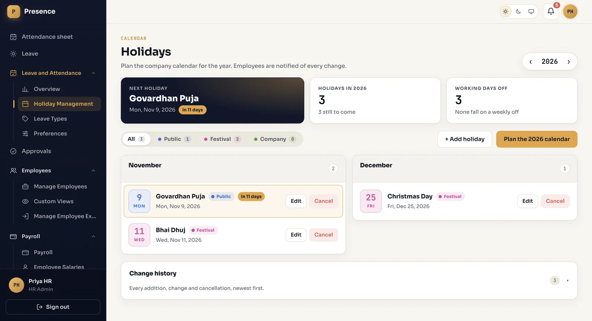

Back to all work
Presence
An attendance and HR system for a company: who came in, who’s on leave, who needs approval, and what to pay at month end.
Live now. The backend and frontend repos are private; ask me and I’ll walk you through the code. Screens below use sample data.
Try the attendance sheet
This is a small copy of the idea. Press a cell to change a day.
Week sheet
| Employee | Mon | Tue | Wed | Thu | Fri | Sat |
|---|
P present · A absent · L on leave · H holiday
The screens





How it’s built
A Spring Boot API with 30+ REST controllers and a React app with 27 pages.
- Location-checked check-inThe server compares the employee’s GPS position with the office radius, logs attempts from outside it, and looks up the address through the Geoapify API.
- Payroll with exportsSalary structures, adjustments and a finalise step, with Excel and PDF exports built on Apache POI and OpenPDF.
- Scheduled jobsPayroll runs, monthly leave credits and missing check-out detection happen on their own.
- Roles enforced twiceSpring Security and JWT guard every API endpoint by role, and the React routes check the same roles.
- Schema in version control38 Flyway migrations build the database, so a fresh server gets the same schema as my laptop.
- No demo accounts in productionThe first HR admin is created on startup from server settings, instead of shipping seeded logins.
- Tested on the real database209 backend tests run on H2 and MySQL; 49 frontend tests use Vitest and React Testing Library.
- DeployedThe API runs on AWS EC2 (Ubuntu, systemd, MySQL) behind Nginx with HTTPS. The frontend is on Vercel.
Rules live in data, not in code
HR can change these from settings, so nobody needs a new release.
- Attendance policySet by HR, with effective dates, so old months keep the rules they were counted under.
- Leave typesActivated by HR. Balances are credited monthly and the leave year ends on 31 March.
- Earned leave carry-forwardCapped at 45 days.
- Paid leave without a balanceBecomes unpaid automatically.
BlogSpace, a live blog platform